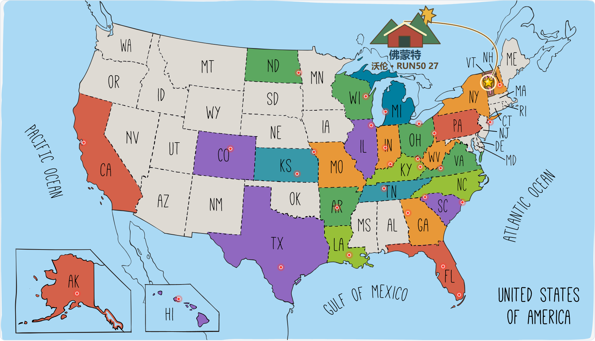
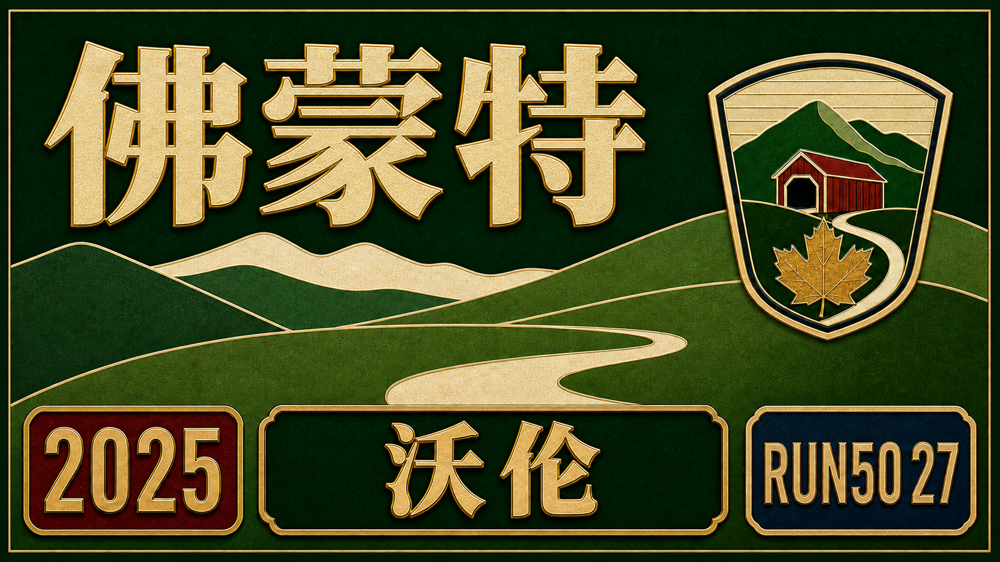

Run50 #第27州｜佛蒙特：疯河谷马拉松｜绿山之州的夏天，跑进乡村油画里


开进新英格兰腹地，在绿山、谷仓、国旗和乡村小路中，跑进一幅夏天的油画。


制图 / Arsenan
前言
去遥远的新英格兰腹地
六月中，我们刚刚北上芝加哥，看了一场 BLACKPINK 的演唱会。耳朵还没从 “A-P-T, A-P-T, A-P-T” 里缓过来，六月底我们又出发了。
这次，一路向东，驶向新英格兰的群山与森林，目的地是 佛蒙特州（Vermont）：去跑一场被称作“世界上最美的马拉松” 的 疯河谷马拉松（Mad Marathon）。
这也是我 Run50 的第 27 个州。从蓝草到绿山，美国这些州，颜色可真多！出发前我和 Manager 闲聊：“I’m driving to Vermont this weekend for a marathon.”
他愣了一下：“Driving? That’s crazy!”我笑了笑：“Yeah… sixteen hours, but Tesla self-driving will help.”
管理员在旁边听到，说她完全不敢用自动驾驶。我也能理解，人工智能这玩意儿，还远远没进化完。但总得有人爱当那只小白鼠。我们也确实感受到了生活质量的提升，但……也真得谨慎啊…… 于是，就这样，有了自动驾驶的加持，哪怕是 16 小时的长途车程，也不再那么恐惧了。
佛蒙特
第27州 · 佛蒙特｜绿山与枫糖的州
佛蒙特（Vermont）位于美国东北部，是 新英格兰六州之一。“Vermont” 来自法语 les monts verts，意思是“绿色的山”。
因此，它又被称作 绿山之州（The Green Mountain State）。这是个山多林密的小州，四分之三的土地都被森林覆盖。夏天是绿的，秋天是红的，每一条乡间路都像通往一幅油画。
这里曾诞生美国政治家伯尼·桑德斯（Bernie Sanders），是自由思想与环保理念的代表州。疯河谷（Mad River Valley） 位于州中部，是这次马拉松的举办地。
河流穿过农场、谷仓和牧场，路边的奶牛成了最稳定的观众。佛蒙特人对自己的土地特别自豪。这里几乎没有麦当劳，也没有沃尔玛，但遍地是手工农场、枫糖作坊和本地啤酒厂。
他们相信 “Small is beautiful”，宁可慢一点、纯一点，也要活得自然。佛蒙特也是美国最大的 枫糖浆产地，切达奶酪、蜂蜜和苹果酒也闻名全美。佛蒙特没有大城市。最大城伯灵顿（Burlington）也不过五六万人，
这里，山不高，却绿得干净；风不大，却凉得恰好。正如当地人说的那句：“In Vermont, we don’t hurry. We live where the world slows down.”
穿过五州
穿越五州的公路日与夜
度过忙碌的周五，我和 Siqi 傍晚出发，正式踏上去佛蒙特的漫长旅程。从肯塔基一路向东北，车窗外的城市一个个掠过。第一站是 辛辛那提（Cincinnati），那座城市像是被森林包围的钢铁岛。
天色微暗，车流穿过立交桥，远处的金色楼群闪着余晖。夜色降临时，我们穿过了 哥伦布（Columbus），公路上灯光一点点亮起，高速的尽头，是克里夫兰（Cleveland）方向的霓虹和指示牌。


从另一侧看城里的高楼 · 摄影 / Arsenan
公路上，前车载着彩色热气球造型 · 摄影 / Arsenan


天色渐暗，继续向东开 · 摄影 / Arsenan
长途路上，在车里休息一下
那晚我们就在克里夫兰郊区停下，简单住一晚，为接下来的 900 公里养点精神。第二天清晨，我们迎着朝阳再次上路。那一刻，太阳从地平线升起，整条 I-80 被橘红色的晨雾包围，世界安静得只剩下风声和轮胎的摩擦声。


天还没亮，在停车场留张自拍 · 摄影 / Arsenan
在充电站停靠时，我们顺便解决早餐。Siqi 的一份格外丰盛：三明治、沙拉，还有炸薯条。中午又在另一处充电站吃了快餐，充电、吃饭、赶路、看风景，一切紧凑又有节奏。


坐回车里吃点东西 · 摄影 / Arsenan
充电时再看一眼天空 · 摄影 / Arsenan


吃点东西，给长途旅行补充能量
穿越纽约州时天色突变，下起了大雨。特斯拉的自动驾驶表现还不错，但为了稳妥，我还是切回了手动，雨刷摆动，车窗模糊，前方的绿意在雨幕里晃动，Siqi 倒在副驾睡得正香。
在快进入佛蒙特前，我们在一个小镇停了一下充电。路边有一家复古餐厅，门口停着一辆 红色马车模型，车上坐着几位蜡像牛仔，车厢上写着 The Bank of Guns ，一看就知道是某种美国西部风主题装饰。


路边展示的红色老马车 · 摄影 / Arsenan
路再往前，就是新英格兰的山谷与湖泊。有人在大湖上垂钓、划船、漂浮在泳圈上，我发现，无论是在中国还是美国，钓鱼这件事，都有一种让时间慢下来的魔力。
进入佛蒙特后，景色忽然变得柔和。道路变窄，树木变密，路边不时有骑行者穿行在林间碎石路上。阳光透过叶缝洒在地上，那一刻，人与自然的边界几乎消失了。
从南方的 肯塔基丘陵 到北方的 佛蒙特绿山，这一趟，我们跨过了 五个州：肯塔基、俄亥俄、宾夕法尼亚、纽约、佛蒙特，看尽了城市的灯、雨中的路、还有乡间的清晨。


两位骑行者沿着绿树间的路前进 · 摄影 / Arsenan
平静的湖面上漂着一艘小船 · 摄影 / Arsenan
抵达山谷
抵达疯河谷 · 山间小镇的夜晚
进入佛蒙特，我们终于来到了这场“疯河谷马拉松”（Mad Marathon）的举办地：Waitsfield 小镇。这里地处 Mad River Valley（疯河谷） 中心，被绿山山脉环抱，是个安静又充满乡村气息的小镇。
沿路能看到一座座典型的 Vermont 谷仓（Barn），红墙、银顶、旁边是连绵的草地与玉米地。这些谷仓几乎成了佛蒙特的视觉符号，远远望去，就像童话插画里那种“理想中的乡村”。


山谷里的农田、谷仓和筒仓 · 摄影 / Arsenan
靠近红色谷仓与高高的筒仓 · 摄影 / Arsenan

我们一路赶路，想在下午前赶到取装备的地点。但结果还是错过了当日的取包窗口。不过幸好，几经波折，我们得知，原来第二天清晨现场也能领取装备。
那一刻，我们终于松了口气。然后我们又去超市补给，买了点水果、面包和速食。然后顺着山路，来到我们预订的山顶 Airbnb。那是一栋立于山坡草地之上的一排小木屋。
女主人一家晚些才回来，但特意给我们留了门和充电说明。果然，一推门就是山风和虫鸣。屋门上贴满了贴纸：滑雪、登山、骑行、NASA、Patagonia……一看就是户外迷之家。那一刻，我们仿佛找到了同类。


房间门上贴满了比赛号码布 · 摄影 / Arsenan
夜幕降临，小屋门前的灯泡一盏盏亮起。我们坐在露台上，打开带来的泡面和沙拉，边吃边看着远处山谷里零星的烟火。跑前的紧张在这一刻慢慢散开，只剩下夏夜的风，和山谷的宁静。

比赛日清晨
错进对出的比赛日清晨
天刚亮，我就在民宿门口放了无人机。草坡上沾着露水，空气凉凉的，是最适合跑步的天气。


在门廊旁回头看看山谷 · 摄影 / Arsenan
草地一直伸向远处的山 · 摄影 / Arsenan
出发去起点，结果导航又带我们去了昨天的教堂。掉个头几分钟就到了起点，就在 Mad River Green，一边是加油站，一边是墓地，典型的美国小镇风景。
取装备很顺利，虽然就一个志愿者。果然不愧叫疯河谷马拉松。比赛路线 是一个典型的山谷环线。从镇中心出发，先沿着河谷往南跑到 Warren Village，再穿过几个起伏的农田小路，绕回北边的 East Warren Road 与 Brook Road。
一路都有起有伏，坡度不至于致命，却能让你怀疑人生。官方地图上还贴心地标出了补给站：水、佳得乐、香蕉，还有几位热心村民自己搭的帐篷。
起点区域人还挺多。全马选手 站在前排，半马选手 在后面。大家互相打量装备、调表、拉伸，氛围却一点都不紧张。这不像大城市的马拉松，更像是邻里运动会。
起点人挺多，全马在前、半马在后。我从全马区域蹭到半马选手处，打算和Siqi一起出发。


跑进绿山
跑进绿山的怀抱
终于要起跑了！我们先在小镇里绕了一会儿，路过加油站、咖啡店，再拐进山谷方向。


和Siqi在起跑人群里自拍 · 摄影 / Arsenan
不一会儿，就看见那座有木头顶的老桥，据说这种“木头屋式”的桥是为了防止木材被雨雪腐蚀，在新英格兰的老乡村很常见，也算是地标级打卡点。


穿过木廊桥，身边都是跑者 · 摄影 / Arsenan
过了桥，前方是无尽的绿色。路面从柏油变成砂石，四周被森林包围，偶尔还有农场的机器在嗡嗡作响，这画面，简直像《乡村爱情·佛蒙特篇》。
这次我带的是 Insta360 X5，360° 的画面把所有山景、草地、桥梁都收入镜头里，为这次 Vermont（佛蒙特）州的旅程留下了特别视角。
我穿的是阿森纳当年范佩西时代的经典战袍，黑蓝拼色，英超袖标还在，多年淘来的宝贝，今天终于有机会上场。


第1英里，沿着路牌继续前进 · 摄影 / Arsenan

跑到 3 英里左右，又见一座木桥，Pine Brook Bridge，建于1870年。桥下溪水潺潺，空气带着松木味，天空的云压得很低，像是下一秒就要下雨。


绿树掩映中的木廊桥 · 摄影 / Arsenan
5 英里折返点前，路边的玉米地绿油油一片，每根秆子都长得有半人高，风一吹，整片田像在跟我们一起加油。忽然,肚子一阵疼。没办法，只能临时“技术性暂停”，还排了个队。
不过这场比赛本就主打养生，马拉松还讲养生，我想我真是跑疯了。


两位跑者经过开阔的草地 · 摄影 / Arsenan
在河上的小桥边自拍 · 摄影 / Arsenan


玉米地旁的第5英里路牌 · 摄影 / Arsenan

上完厕所，过了那个红屋顶的谷仓，Siqi 迎面跑过来，我们合了个影继续跑。


沿着农场小路继续向前 · 摄影 / Arsenan


在乡间赛道上遇到 Siqi · 摄影 / Arsenan
和 Siqi 一起留张自拍 · 摄影 / Arsenan
前面又是一座木桥，河水在脚下安静流淌。


再次跑过老木桥 · 摄影 / Arsenan
风景真的很治愈，绿得漫无边际，风一阵阵吹过来，凉凉的。路上跑者也各有特色：有人穿婚纱，有人穿梵高的《星空》，还有本地人开着拖拉机在路边扬起尘土。


路边的红色拖拉机 · 摄影 / Arsenan
路过居民摆出的加油装饰 · 摄影 / Arsenan
当我回过神，前方的路标已经写着：“Mile 10”。十英里，跑进了山谷深处，也跑进了佛蒙特的油画里。

山间路上
佛蒙特的绿野与山风
10英里过后，赛道进入最美的一段。左手边是一大片牧场，牛儿在悠闲地吃草，路边还盛开着一排淡紫色的小花。前面的跑者干脆摘了一朵插在帽子上，像是跑进了明信片。补给点也开始多起来，


志愿者们在桌后忙碌着，递水、递佳得乐，还有一位戴草帽的老奶奶坐在门口摇着手：“Good job, runners!”那一瞬间真想也坐下喝杯茶。风有点凉，但美国跑者都很“放飞”，

不少人上衣都没穿，肌肉线条在山风里闪光。我一路在农场和绿野间穿行，


草地间的红色谷仓 · 摄影 / Arsenan


沿着山谷的小路继续跑 · 摄影 / Arsenan
第14英里，路牌和地面都有标记 · 摄影 / Arsenan
连路边停着的 Mini Cooper 也是绿色的，仿佛全世界都在配色。


一辆绿色小车停在草地边 · 摄影 / Arsenan
突然，一位纹身女跑者从我身边冲过，一头红紫色的头发在风中炸开，像只闯进森林的火烈鸟。我还没反应过来，她已经跑成了一个红色的小点。

再跑一阵，到了 20 英里处的小补给站，居然还有西瓜！ 那一口甜到心里的汁水，比能量胶更有效，比喝水还让人感动。远处的山开始被阳光照亮，空气有点热，但脚步轻了。


路边摆好的西瓜补给 · 摄影 / Arsenan


山谷里的公路与自己 · 摄影 / Arsenan
绿山州（Vermont）的乡村路，就这么在汗水和风里，一点点被我跑完。
终点之前
红色谷仓与国旗的尽头
跑到 23 英里时，前方出现了疯河谷马拉松最有名的地标：那座红色谷仓（Skinner Barn）。它建于 19 世纪末，屋顶是典型的新英格兰折线形，后面连着三座灰白色的粮仓（silos）。
百年来，它一直静静站在山谷边，见证四季的更替，也见证每一位跑者的经过。如今它成了疯河谷马拉松的标志，被印在奖牌、T恤、横幅上，仿佛在告诉所有人：这里的速度，不重要；重要的是你有没有看一眼那片绿。
我放慢脚步，掏出手机拍了几张，自从有了运动相机，我很少在比赛里掏手机，但面对这幅画，手几乎是自己举起来的。


在红色谷仓前留张自拍 · 摄影 / Arsenan
再往前跑，就是 24 英里的路标，黑色的柏油路重新变成砂石小路，空气里带着点泥土味。跑过那座老木顶桥，就意味着快到终点了。


街边的小镇重新出现，咖啡馆、邮局、加油站，还有那片我记得的墓地。听起来有点奇怪，但这种“从乡野回到人间”的感觉，很有仪式感。


回到小镇的街道 · 摄影 / Arsenan
终点前的草地上插满了各国国旗。风吹得它们猎猎作响。我看到中国国旗那一刻，心里突然一热。在这场不到千人的小比赛里，可能就我和 Siqi 代表中国。🇨🇳


那种微妙的自豪感，比成绩更实在。冲线时，我举起双手，不到五小时完赛。这赛道起伏大、坡不少，能跑完，已经是胜利。


草地旁的赛事装饰 · 摄影 / 赛事官方
奖牌是一座红房子和一只公鸡，象征佛蒙特的农场精神：黎明前第一声啼鸣，唤醒山谷的活力。背后那句 “Mad River Green Crops”，是对疯河谷农业传统的致敬。
Siqi 也顺利完赛，我们在终点草地上合了影。天空开始飘小雨，空气湿润、带点青草味。身边有人席地而坐、有人啃汉堡、有人举着奖牌自拍。一切都安静又生动，像是乡村油画的最后一笔。


中国国旗旁，举起谷仓造型的奖牌 · 摄影 / Arsenan
谷仓、筒仓和牛，都收进这块奖牌里 · 摄影 / Arsenan


Finish festival tents in the Mad River Valley · 摄影 / Arsenan

我们走回停车的地方，穿过草地公园，绿得发亮。这场疯河谷的夏日马拉松，像是一场对自然、对人、对生活的慢节奏致敬。


赛后小聚
佛蒙特的汉堡、薯条与再出发
跑完马拉松后，我们约了 Cindy 和 Jim 的儿子 Andy Whitaker、儿媳 Lindsay Whitaker 一起吃饭。
他们住在佛蒙特，也是因为工作几年间搬过不少地方。我们约在一家很 chill 的户外餐厅：有汉堡、有薯条、有柠檬汽水，标准的美国味儿。
我们先到，没一会儿，他们一家就开车过来了，还有小朋友，红头发、戴着橙色 Crocs，萌得不行。原本还担心第一次见面会不会有点尴尬，结果完全多虑了。Andy 胖胖的，笑起来憨憨的，但没想到当年竟是 波士顿马拉松跑者！
Lindsay 特别热情，是本地的野外露营向导，她还讲起她去给 Andy 加油的事。他们说他们真的很喜欢佛蒙特，“我们这里没有麦当劳，也不需要。”
那一刻我突然理解了，这片土地的人，是真的热爱慢节奏的生活。我们合了影、加了 Facebook 朋友。离开的时候，挥手的那一幕让我觉得，


野餐桌旁，再留一张合照
赛后和朋友一家自拍 · 摄影 / Arsenan
其实在美国，交朋友并不难，只要主动一点，热情一点。回程路上，我们顺路在 Planet Fitness 洗了个澡，恢复一下，再继续上路。


返程途中停靠一下 · 摄影 / Arsenan
路途依旧漫长，但心情已经很舒畅。我们在辛辛那提停了一下，吃了顿韩餐，泡菜锅、石锅拌饭，补齐了盐分。夕阳下的高速被照得发亮，天空从金黄渐变到深蓝。
趁天还没有全黑的时候，我们回到了路易斯维尔的家离。


天边的金色云层 · 摄影 / Arsenan
深蓝色暮光下继续赶路 · 摄影 / Arsenan


夜里继续开车回家 · 摄影 / Arsenan
Run50 · 第27州：佛蒙特，打卡！下班啦！这场比赛结束后，我就要暂别美国，时隔六年，回国一段时间了，很期待。Run50 系列也要按下暂停键。但我知道，这绝对不是终点。
就像每次跑完一场马拉松：终点线，其实只是下一段旅程的起点。